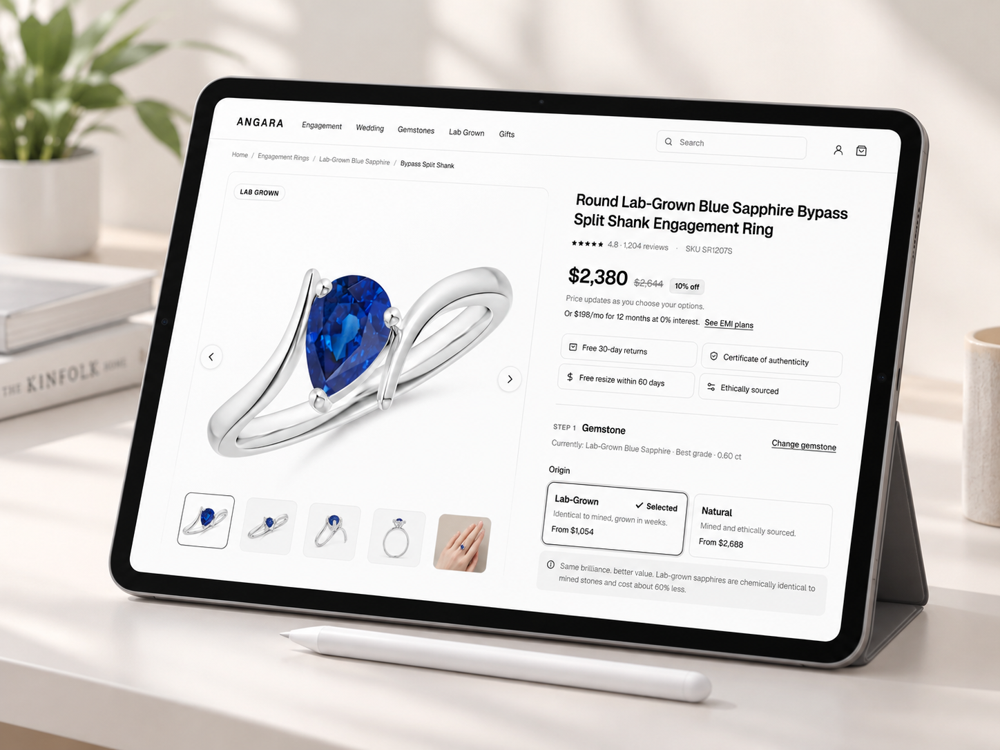

Angara
A product detail page redesign for a fine jewellery brand. Clearer choices, trust up front, and a price that never surprises.

An expensive choice, made online.
Find the gaps in Angara's product page and redesign it for desktop and mobile, with a smooth customisation flow for US shoppers aged 25 to 65.
{{ st.v }}{{ st.l }}
6 gaps on the current page.
I walked through the live page on desktop and mobile. These six issues slowed buyers down or made them doubt the purchase.
{{ pb.d }}See the fix →
About 80% of the jewellery journey happens online. The page has to answer quality, price and trust before the buyer scrolls.
Before and after.
Each fix answers one gap, in the same order. Pick one to compare the old screen with the redesign.
Before{{ fa.beforeImg }}
After{{ fa.afterImg }}
{{ fc.t }}. {{ fc.d }}
More of the redesign.
One guided page.
{{ oc.v }}{{ oc.l }}
Try it yourself.
Open full screen ↗The prototype is built for desktop. Open it in a new tab to try the full flow.Open prototype ↗
What I learned.
{{ ln.n }}{{ ln.t }}{{ ln.d }}